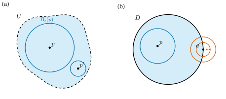
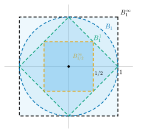

3.1 열린집합과 위상공간
이 절의 목표
- 거리공간의 열린공과 열린집합을 정의하고, 주어진 집합이 열린집합인지 공(ball)을 이용해 판정할 수 있다.
- 열린집합의 세 성질에서 위상의 공리를 뽑아내고, 위상공간의 예와 비예를 들 수 있다.
- 닫힌집합과 폐포를 정의하고, “모든 근방이 \(A\)와 만난다”는 판정법으로 폐포를 계산할 수 있다.
- 위상의 기저를 이해하고, 서로 다른 거리가 같은 위상을 줄 수 있음을 증명할 수 있다.
선수 지식
- 예 1.1.2 (\(\R^n\)): \(\R^n\)의 점을 \(x = (x^1, \dots, x^n)\)으로 쓴다. 위첨자는 거듭제곱이 아니라 성분 번호다.
- 정의 1.5.4 (노름): 유클리드 노름 \(\abs{x} = \sqrt{(x^1)^2 + \dots + (x^n)^2}\). 따름정리 1.5.6 (삼각부등식, 유클리드 거리): \(\abs{x + y} \le \abs{x} + \abs{y}\)이고, 유클리드 거리 \(d(p, q) = \abs{q - p}\)는 세 성질(양수성, 대칭성, 삼각부등식)을 만족한다.
- 집합의 기본 연산: 합집합 \(\bigcup\), 교집합 \(\bigcap\), 여집합 \(X \setminus A\), 드모르간 법칙 \(X \setminus \bigcup_\alpha A_\alpha = \bigcap_\alpha (X \setminus A_\alpha)\), \(X \setminus \bigcap_\alpha A_\alpha = \bigcup_\alpha (X \setminus A_\alpha)\). 여기서 \(\alpha\)는 임의의(무한할 수도 있는) 첨자 집합을 움직인다.
동기
1장과 2장에서는 \(\R^n\) 안에서 모든 것을 거리로 쟀다. 두 점 사이의 거리 \(\abs{x - y}\)로 수열의 극한을 정하고, “\(x\)가 \(p\)에 가까우면 \(F(x)\)가 \(F(p)\)에 가깝다”로 연속을 정하고, 그 위에서 미분을 정의했다. 그런데 이 study set이 다룰 대상에는 거리가 처음부터 붙어 있지 않거나, 붙어 있더라도 자연스럽지 않은 것이 많다.
- 구면 \(S^2\)은 \(\R^3\) 안에 놓여 있으므로 \(\R^3\)의 거리를 빌려 쓸 수 있다. 그러나 구면 위에 사는 존재에게는 대원을 따라 잰 거리가 더 자연스럽다. 두 거리는 값이 다르다.
- 실사영공간 \(\RP^2\)의 “점”은 \(\R^3\)에서 원점을 지나는 직선이다(3장의 몫공간 절). 두 직선 사이의 거리를 무엇으로 정해야 하는가?
- 11장의 추상 다양체는 둘러싼 공간이 아예 없다.
다행히 연속과 극한에 실제로 필요한 것은 거리의 값이 아니다. 필요한 것은 “\(p\) 근처”라는 개념, 즉 어떤 집합이 “각 점을 조금씩 여유 있게 둘러싸고 있는가”라는 정보뿐이다. 이 정보를 담은 집합을 열린집합이라 한다. 이 절에서는 먼저 거리가 있는 공간에서 열린집합을 정의하고, 열린집합이 만족하는 세 성질을 뽑아낸다. 그 세 성질을 공리로 삼은 것이 위상이다. 이렇게 하면 이 장의 첫 질문 “가까움을 거리 없이 말할 수 있는가?”에 답할 수 있다.

거리공간
\(\R^n\)의 거리 \(\abs{x - y}\)에서 우리가 실제로 쓰는 성질은 세 가지뿐이다. 거리는 음이 아니고 같은 점 사이에서만 \(0\)이다. \(x\)에서 \(y\)까지와 \(y\)에서 \(x\)까지의 거리가 같다. 돌아가는 길은 곧장 가는 길보다 짧지 않다. 이 세 성질만 뽑아내면 다음 정의가 된다.
정의 3.1.1 (거리공간, metric space). 집합 \(X\)와 함수 \(d\colon X \times X \to \R\)가 모든 \(x, y, z \in X\)에 대하여 다음 세 조건을 만족하면 \(d\)를 \(X\) 위의 거리(metric)라 하고, 순서쌍 \((X, d)\)를 거리공간(metric space)이라 한다.
- (양의 정부호성) \(d(x, y) \ge 0\)이고, \(d(x, y) = 0\)일 필요충분조건은 \(x = y\)이다.
- (대칭성) \(d(x, y) = d(y, x)\).
- (삼각부등식) \(d(x, z) \le d(x, y) + d(y, z)\).
거리가 문맥에서 분명하면 \((X, d)\)를 그냥 \(X\)로 쓴다.
예 3.1.2 (\(\R^n\) 위의 세 거리). \(x, y \in \R^n\)에 대하여 다음 셋은 모두 \(\R^n\) 위의 거리다.
첫째가 따름정리 1.5.6(b)의 유클리드 거리이고, \(\R^n\)에 거리를 따로 말하지 않으면 늘 이것을 쓴다. 조건 1과 2는 세 거리 모두 식에서 바로 보인다 (예를 들어 \(d_\infty(x, y) = 0\)이면 모든 \(i\)에서 \(\abs{x^i - y^i} = 0\)이다). 조건 3을 확인하자.
- \(d_1\): 각 \(i\)에서 실수의 삼각부등식 \(\abs{x^i - z^i} \le \abs{x^i - y^i} + \abs{y^i - z^i}\)이 성립한다. 이것을 \(i = 1, \dots, n\)에 대해 더하면 된다.
- \(d_\infty\): 각 \(i\)에서 \(\abs{x^i - z^i} \le \abs{x^i - y^i} + \abs{y^i - z^i} \le d_\infty(x, y) + d_\infty(y, z)\)이다. 우변은 \(i\)에 무관하므로, 좌변의 최댓값 \(d_\infty(x, z)\)도 우변 이하다.
- \(d\): 따름정리 1.5.6(b)에서 이미 확인했다. 노름의 삼각부등식 \(\abs{a + b} \le \abs{a} + \abs{b}\)(코시-슈바르츠 부등식, 정리 1.5.5에서 나온다)에 \(a = x - y\), \(b = y - z\)를 넣은 것이다.
검증: verify/v-3-1-topological-spaces.py
비예 3.1.3. \(\R\) 위의 함수 \(\rho(x, y) = (x - y)^2\)은 조건 1과 2를 만족하지만 거리가 아니다. 삼각부등식을 어긴다: \(\rho(0, 2) = 4\)이지만 \(\rho(0, 1) + \rho(1, 2) = 1 + 1 = 2\)이다. 제곱하면 긴 거리가 지나치게 커져서 “돌아가는 길이 더 짧은” 일이 생긴다.
예 3.1.4 (부분집합의 거리, 이산거리). (a) \((X, d)\)가 거리공간이고 \(A \subseteq X\)이면, \(d\)를 \(A \times A\)로 제한한 함수는 \(A\) 위의 거리다. 세 조건은 \(X\)의 모든 점에서 성립하므로 \(A\)의 점에서도 성립한다. 예를 들어 단위구면 \(S^n = \{x \in \R^{n+1} : \abs{x} = 1\}\)은 \(\R^{n+1}\)의 유클리드 거리를 제한해 거리공간이 된다. 두 점 사이의 거리는 구면을 뚫고 지나가는 현(chord)의 길이다.
(b) 임의의 집합 \(X\)에서 \(x \ne y\)이면 \(d(x, y) = 1\), \(x = y\)이면 \(d(x, y) = 0\)으로 정하면 거리다. 이것을 이산거리(discrete metric)라 한다. 삼각부등식은 다음과 같이 확인한다. \(x = z\)이면 좌변이 \(0\)이다. \(x \ne z\)이면 \(y\)는 \(x\)와 \(z\) 가운데 적어도 하나와 다르므로 우변이 \(1\) 이상이다.
거리공간의 열린집합
정의 3.1.5 (열린공과 열린집합, open ball and open set). \((X, d)\)가 거리공간이라 하자. \(p \in X\)이고 \(r \gt 0\)일 때
를 \(p\)를 중심으로 하는 반지름 \(r\)인 열린공(open ball)이라 한다. 부분집합 \(U \subseteq X\)가 다음 조건을 만족하면 \(U\)를 (거리 \(d\)에 대한) 열린집합(open set)이라 한다.
- 모든 \(p \in U\)에 대하여 어떤 \(r \gt 0\)이 존재하여 \(B_r(p) \subseteq U\)이다.
한정사의 순서에 주의하자. 반지름 \(r\)은 점 \(p\)마다 따로 골라도 된다. 그림 3.1.1(a)에서 경계에 가까운 \(p'\)은 작은 공을 쓴다. \(\R\)에서 열린공은 열린구간 \((p - r,\ p + r)\)이고, \(\R^2\)에서는 경계를 뺀 원판이다. 그런데 이름이 “열린공”이라고 해서 정의 3.1.5의 뜻으로 열려 있다는 것이 저절로 보장되지는 않는다. 확인해 두자.
보조정리 3.1.6. 거리공간의 열린공 \(B_r(p)\)는 열린집합이다. 구체적으로, \(q \in B_r(p)\)이고 \(s = r - d(p, q)\)이면 \(s \gt 0\)이고 \(B_s(q) \subseteq B_r(p)\)이다.
증명 아이디어: \(q\)에서 공의 가장자리까지 남은 거리 \(s\)만큼은 여유가 있다. 삼각부등식이 이것을 보장한다.
증명. \(q \in B_r(p)\)이므로 \(d(p, q) \lt r\)이고, 따라서 \(s = r - d(p, q) \gt 0\)이다. \(x \in B_s(q)\)라 하자. 삼각부등식(정의 3.1.1의 조건 3)과 대칭성에 의해 \[ d(p, x) \le d(p, q) + d(q, x) \lt d(p, q) + s = r \] 이다. 따라서 \(x \in B_r(p)\)이다. \(x\)는 \(B_s(q)\)의 임의의 점이므로 \(B_s(q) \subseteq B_r(p)\)이다.
예 3.1.7 (열린집합). (a) \(\R\)의 열린구간 \((a, b)\)는 열린공 \(B_{(b-a)/2}((a+b)/2)\)이므로 열린집합이다. 반직선 \((a, \infty)\)도 열린집합이다. \(p \gt a\)이면 \(B_{p - a}(p) = (a,\ 2p - a) \subseteq (a, \infty)\)이다.
(b) 오른쪽 반평면 \(H = \{(x^1, x^2) \in \R^2 : x^1 \gt 0\}\)은 열린집합이다. \(p = (p^1, p^2) \in H\)이면 \(r = p^1 \gt 0\)으로 잡는다. \(x \in B_r(p)\)이면 \(\abs{x^1 - p^1} \le \abs{x - p} \lt p^1\)이므로 \(x^1 \gt p^1 - p^1 = 0\), 즉 \(x \in H\)이다.
(c) 이산거리(예 3.1.4(b))에서는 \(B_{1/2}(p) = \{p\}\)이다. 따라서 모든 부분집합 \(U\)가 열린집합이다. 각 \(p \in U\)에서 \(B_{1/2}(p) = \{p\} \subseteq U\)이기 때문이다.
(d) 공집합 \(\varnothing\)은 열린집합이다. 조건 “모든 \(p \in \varnothing\)에 대하여 …”를 확인할 점이 하나도 없으므로 조건이 (공허하게) 참이다.
비예 3.1.8. (a) \([0, 1)\)은 \(\R\)의 열린집합이 아니다. \(0 \in [0, 1)\)이지만 어떤 \(r \gt 0\)에 대해서도 \(B_r(0) = (-r, r)\)은 음수 \(-r/2\)를 포함한다.
(b) 닫힌 원판 \(D = \{x \in \R^2 : \abs{x} \le 1\}\)은 열린집합이 아니다. \(q = (1, 0) \in D\)이고, 어떤 \(\varepsilon \gt 0\)에 대해서도 점 \((1 + \varepsilon/2,\ 0)\)은 \(B_\varepsilon(q)\)에 있지만 \(D\)에 없다(그림 3.1.1(b)).
(c) 정수 전체 \(\Z\)는 \(\R\)의 열린집합이 아니다. \(0 \in \Z\)이지만 \(B_r(0)\)은 정수가 아닌 \(\min(r, 1)/2\)를 포함한다.
다음 정리는 열린집합들이 합집합과 교집합에 대해 어떻게 행동하는지를 말한다. 이 세 성질이 이 절의 핵심이다. 다음 소절에서 이것을 공리로 삼는다.
정리 3.1.9 (열린집합의 세 성질). \((X, d)\)가 거리공간이라 하자.
- (a) \(\varnothing\)과 \(X\)는 열린집합이다.
- (b) 열린집합들의 합집합 \(\bigcup_\alpha U_\alpha\)는 열린집합이다. 열린집합의 개수는 무한해도 된다.
- (c) 유한개의 열린집합의 교집합 \(U_1 \cap \dots \cap U_k\)는 열린집합이다.
증명 아이디어: (b)는 한 집합 안에 들어간 공이 합집합 안에도 들어간다는 것이다. (c)는 반지름 \(k\)개 가운데 가장 작은 것을 고른다. 개수가 유한해야 가장 작은 반지름이 양수다.
증명. (a) \(\varnothing\)은 예 3.1.7(d)에서 보았다. \(X\)의 경우, 모든 \(p\)에서 \(B_1(p) \subseteq X\)이다(열린공은 정의상 \(X\)의 부분집합이다).
(b) \(p \in \bigcup_\alpha U_\alpha\)라 하자. 그러면 어떤 첨자 \(\beta\)에 대하여 \(p \in U_\beta\)이다. \(U_\beta\)가 열린집합이므로 \(B_r(p) \subseteq U_\beta\)인 \(r \gt 0\)이 있고, \(U_\beta \subseteq \bigcup_\alpha U_\alpha\)이므로 \(B_r(p) \subseteq \bigcup_\alpha U_\alpha\)이다.
(c) \(p \in U_1 \cap \dots \cap U_k\)라 하자. 각 \(i\)에서 \(p \in U_i\)이고 \(U_i\)가 열린집합이므로 \(B_{r_i}(p) \subseteq U_i\)인 \(r_i \gt 0\)이 있다. \(r = \min(r_1, \dots, r_k)\)로 두면 \(r \gt 0\)이다(양수 유한개의 최솟값). \(r \le r_i\)이므로 \(B_r(p) \subseteq B_{r_i}(p) \subseteq U_i\)가 모든 \(i\)에서 성립한다. 따라서 \(B_r(p) \subseteq U_1 \cap \dots \cap U_k\)이다.
비예 3.1.10 (무한 교집합). 정리 3.1.9(c)에서 “유한개”를 뺄 수 없다. \(\R\)에서 \(U_k = (-1/k,\ 1/k)\) (\(k = 1, 2, 3, \dots\))는 모두 열린집합이지만 \(\bigcap_{k=1}^{\infty} U_k = \{0\}\)이다. \(x \ne 0\)이면 \(1/k \lt \abs{x}\)인 \(k\)가 있어 \(x \notin U_k\)이기 때문이다. 그리고 \(\{0\}\)은 열린집합이 아니다. 증명에서 보면, 반지름 \(r_k = 1/k\)들의 “최솟값”이 없고 하한이 \(0\)이 된다.
위상공간
정리 3.1.9의 세 성질에는 거리가 한 번도 나오지 않는다. 그래서 이 세 성질을 만족하는 부분집합들의 모임만 주어지면, 거리 없이도 “열린집합”을 말할 수 있다.
정의 3.1.11 (위상공간, topological space). 집합 \(X\)의 부분집합들의 모임 \(\mathcal{T}\)가 다음 세 조건을 만족하면 \(\mathcal{T}\)를 \(X\) 위의 위상(topology)이라 한다.
- \(\varnothing \in \mathcal{T}\)이고 \(X \in \mathcal{T}\)이다.
- \(\mathcal{T}\)의 원소들의 합집합은 (원소가 몇 개이든) \(\mathcal{T}\)에 속한다.
- \(\mathcal{T}\)의 원소 유한개의 교집합은 \(\mathcal{T}\)에 속한다.
순서쌍 \((X, \mathcal{T})\)를 위상공간(topological space)이라 하고, \(\mathcal{T}\)의 원소를 \(X\)의 열린집합(open set)이라 한다. 점 \(p \in X\)를 포함하는 열린집합을 \(p\)의 근방(neighborhood)이라 한다. 위상이 문맥에서 분명하면 \((X, \mathcal{T})\)를 그냥 \(X\)로 쓴다.
조건 3은 “두 열린집합의 교집합은 열려 있다”만 확인하면 된다. \(U_1 \cap \dots \cap U_k = (U_1 \cap \dots \cap U_{k-1}) \cap U_k\)로 묶어 \(k\)에 대한 귀납법을 쓰면 되기 때문이다. 정의 3.1.5의 “열린집합”과 정의 3.1.11의 “열린집합”은 같은 낱말이다. 정의 3.1.11이 정의 3.1.5를 일반화한 것이고, 거리공간에서는 다음 예 (a)에 의해 두 뜻이 일치하므로 혼란이 없다.
예 3.1.12 (위상의 예). (a) 거리공간 \((X, d)\)에서 정의 3.1.5의 뜻으로 열린 집합 전체 \(\mathcal{T}_d\)는 정리 3.1.9에 의해 위상이다. 이것을 \(d\)가 주는 거리 위상(metric topology)이라 한다. \(\R^n\)에는 따로 말하지 않는 한 늘 유클리드 거리의 거리 위상을 주고, 이것을 \(\R^n\)의 표준 위상(standard topology)이라 한다.
(b) 임의의 집합 \(X\)에서 모든 부분집합의 모임은 위상이다. 이것을 이산위상(discrete topology)이라 한다. 이산거리의 거리 위상이 바로 이것이다(예 3.1.7(c)).
(c) \(\mathcal{T} = \{\varnothing, X\}\)도 위상이다. 이것을 밀착위상(trivial topology)이라 한다. 합집합과 교집합이 모두 \(\varnothing\)이나 \(X\)가 되므로 세 조건이 성립한다.
(d) \(X = \{a, b, c\}\)에서 \(\mathcal{T} = \{\varnothing, \{a\}, \{a, b\}, X\}\)는 위상이다. 이 모임은 포함관계로 한 줄로 늘어서 있으므로 두 원소의 합집합은 큰 쪽, 교집합은 작은 쪽이 되어 다시 \(\mathcal{T}\)에 속한다.
비예 3.1.13. (a) \(X = \{a, b, c\}\)에서 \(\{\varnothing, \{a\}, \{b\}, X\}\)는 위상이 아니다. \(\{a\} \cup \{b\} = \{a, b\}\)가 이 모임에 없어 조건 2를 어긴다.
(b) \(\R\)에서 \(\varnothing\), \(\R\), 그리고 유계인 열린구간 \((a, b)\) 전체의 모임은 위상이 아니다. 두 원소 \((0, 1)\)과 \((2, 3)\)의 합집합은 구간이 아니므로 조건 2를 어긴다. (조건 3은 만족한다. 두 열린구간의 교집합은 공집합이거나 열린구간이다.)
한 집합 위에도 위상은 여러 가지가 있다. \(\R\) 위의 표준 위상, 이산위상, 밀착위상은 서로 다르다. 그러면 모든 위상이 어떤 거리에서 오는가? 그렇지 않다.
명제 3.1.14. \(X\)에 서로 다른 두 점이 있으면, \(X\)의 밀착위상은 어떤 거리의 거리 위상도 아니다.
증명. \(d\)가 \(X\) 위의 거리라 하고 \(x \ne y\)라 하자. \(r = d(x, y)\)로 두면 정의 3.1.1의 조건 1에서 \(r \gt 0\)이다. 보조정리 3.1.6에 의해 \(B_r(x)\)는 \(d\)에 대한 열린집합이다. 그런데 \(x \in B_r(x)\)이므로 \(B_r(x) \ne \varnothing\)이고, \(d(y, x) = r\)은 \(r\)보다 작지 않으므로 \(y \notin B_r(x)\), 즉 \(B_r(x) \ne X\)이다. 따라서 \(\mathcal{T}_d\)에는 \(\varnothing\)도 \(X\)도 아닌 원소가 있어 밀착위상과 다르다.
닫힌집합과 폐포
열린집합이 “경계를 하나도 포함하지 않는 집합”이라면, 그 반대편에 “경계를 모두 포함하는 집합”이 있다. 위상공간에서는 경계를 따로 정의하지 않고 여집합으로 이것을 정의한다.
정의 3.1.15 (닫힌집합과 폐포, closed set and closure). \(X\)가 위상공간이라 하자. 부분집합 \(A \subseteq X\)의 여집합 \(X \setminus A\)가 열린집합이면 \(A\)를 닫힌집합(closed set)이라 한다. \(A\)를 포함하는 모든 닫힌집합의 교집합을 \(A\)의 폐포(closure)라 하고 \(\overline{A}\)로 쓴다.
명제 3.1.16 (닫힌집합의 성질). \(X\)가 위상공간이라 하자.
- (a) \(\varnothing\)과 \(X\)는 닫힌집합이다.
- (b) 닫힌집합들의 교집합은 (개수가 무한해도) 닫힌집합이다.
- (c) 유한개의 닫힌집합의 합집합은 닫힌집합이다.
- (d) \(\overline{A}\)는 \(A\)를 포함하는 가장 작은 닫힌집합이다. 특히 \(A\)가 닫힌집합일 필요충분조건은 \(A = \overline{A}\)이다.
증명. (a) \(X \setminus \varnothing = X\)와 \(X \setminus X = \varnothing\)은 열린집합이다(정의 3.1.11의 조건 1). (b) 닫힌집합 \(A_\alpha\)들에 대해 드모르간 법칙으로 \(X \setminus \bigcap_\alpha A_\alpha = \bigcup_\alpha (X \setminus A_\alpha)\)이고, 이것은 열린집합들의 합집합이므로 열린집합이다(조건 2). (c) 같은 방식으로 \(X \setminus (A_1 \cup \dots \cup A_k) = (X \setminus A_1) \cap \dots \cap (X \setminus A_k)\)는 열린집합 유한개의 교집합이다(조건 3).
(d) (b)에 의해 \(\overline{A}\)는 닫힌집합이고, 교집합에 참여한 모든 집합이 \(A\)를 포함하므로 \(A \subseteq \overline{A}\)이다. \(C\)가 \(A\)를 포함하는 닫힌집합이면 \(C\)는 교집합에 참여한 집합 가운데 하나이므로 \(\overline{A} \subseteq C\)이다. 따라서 \(\overline{A}\)는 \(A\)를 포함하는 가장 작은 닫힌집합이다. \(A\)가 닫힌집합이면 \(A\) 자신이 그런 \(C\)이므로 \(\overline{A} \subseteq A \subseteq \overline{A}\)이다. 거꾸로 \(A = \overline{A}\)이면 \(A\)는 닫힌집합이다.
폐포를 “닫힌집합들의 교집합”으로 계산하기는 어렵다. 실제 계산에는 다음 판정법을 쓴다.
명제 3.1.17 (폐포의 점). \(X\)가 위상공간이고 \(A \subseteq X\), \(p \in X\)라 하자. \(p \in \overline{A}\)일 필요충분조건은 \(p\)의 모든 근방이 \(A\)와 만나는 것이다. \(X\)가 거리공간이면, 이 조건은 모든 \(\varepsilon \gt 0\)에 대하여 \(B_\varepsilon(p) \cap A \ne \varnothing\)인 것과 같다.
증명 아이디어: \(A\)와 만나지 않는 근방 \(U\)가 있다는 것과, \(U\)의 여집합이라는 닫힌집합이 \(A\)를 품으면서 \(p\)를 빼 버린다는 것은 같은 말이다.
증명. 두 조건의 부정이 동치임을 보인다. \(p\)의 근방 \(U\)가 \(U \cap A = \varnothing\)을 만족한다고 하자. 그러면 \(X \setminus U\)는 닫힌집합이고 \(A \subseteq X \setminus U\)이므로 명제 3.1.16(d)에 의해 \(\overline{A} \subseteq X \setminus U\)이다. \(p \in U\)이므로 \(p \notin \overline{A}\)이다. 거꾸로 \(p \notin \overline{A}\)라 하자. 그러면 \(U = X \setminus \overline{A}\)는 열린집합이고 \(p\)를 포함하므로 \(p\)의 근방이다. 또 \(A \subseteq \overline{A}\)이므로 \(U \cap A = \varnothing\)이다.
거리공간의 경우: 열린공 \(B_\varepsilon(p)\)는 \(p\)의 근방이다(보조정리 3.1.6). 거꾸로 \(p\)의 근방 \(U\)는 어떤 \(B_\varepsilon(p)\)를 포함한다(정의 3.1.5). 따라서 “모든 근방이 \(A\)와 만난다”와 “모든 \(B_\varepsilon(p)\)가 \(A\)와 만난다”는 같은 조건이다.
예 3.1.18. (a) 거리공간에서 \(K = \{x \in X : d(x, p) \le r\}\)은 닫힌집합이다. \(y \notin K\)이면 \(s = d(y, p) - r \gt 0\)이다. \(x \in B_s(y)\)이면 삼각부등식에서 \(d(x, p) \ge d(y, p) - d(y, x) \gt d(y, p) - s = r\)이므로 \(x \notin K\)이다. 즉 \(B_s(y) \subseteq X \setminus K\)이고, 여집합이 열린집합이다.
(b) 거리공간에서 한 점 \(\{p\}\)는 닫힌집합이다. \(y \ne p\)이면 \(B_{d(y,p)}(y)\)는 \(p\)를 포함하지 않으므로 \(X \setminus \{p\}\)가 열린집합이다. 명제 3.1.16(c)에 의해 유한집합도 닫힌집합이다.
(c) \(\R\)에서 \(\overline{(0, 1)} = [0, 1]\)이다. \([0, 1]\)은 여집합 \((-\infty, 0) \cup (1, \infty)\)가 열려 있으므로 닫힌집합이고 \((0, 1)\)을 포함한다. 따라서 \(\overline{(0,1)} \subseteq [0,1]\)이다. 한편 \(0\)의 모든 공 \(B_\varepsilon(0)\)은 \((0, 1)\)의 점 \(\min(\varepsilon, 1)/2\)를 포함하므로 명제 3.1.17에 의해 \(0 \in \overline{(0, 1)}\)이고, \(1\)도 같다.
(d) \(\R^n\)에서 열린공 \(B_1(0)\)의 폐포는 닫힌공 \(\{x : \abs{x} \le 1\}\)이다. (a)에 의해 닫힌공은 \(B_1(0)\)을 포함하는 닫힌집합이므로 폐포는 그 안에 있다. 거꾸로 \(\abs{x} = 1\)이고 \(0 \lt \varepsilon \lt 1\)이면 점 \(y = (1 - \varepsilon/2)x\)는 \(\abs{y} = 1 - \varepsilon/2 \lt 1\)이고 \(\abs{x - y} = \varepsilon/2 \lt \varepsilon\)이므로 \(B_\varepsilon(x) \cap B_1(0) \ne \varnothing\)이다. \(\varepsilon \ge 1\)이면 더 큰 공이므로 역시 만난다. 따라서 \(x \in \overline{B_1(0)}\)이다. 같은 논증으로 \(\R^n\)에서 \(\overline{B_r(p)} = \{x : \abs{x - p} \le r\}\)이다. 그래서 \(\R^n\)에서는 닫힌공을 \(\overline{B}_r(p)\)로 쓴다.
(e) \(\R\)에서 유리수 전체 \(\mathbb{Q}\)의 폐포는 \(\R\)이다. 모든 열린구간에 유리수가 있기 때문이다(실수의 기본 성질).
비예 3.1.19. (a) \([0, 1)\)은 \(\R\)의 닫힌집합도 아니다. 여집합 \((-\infty, 0) \cup [1, \infty)\)는 점 \(1\)에서 비예 3.1.8(a)와 같은 이유로 열린집합이 아니다. \([0, 1)\)은 열린집합도 닫힌집합도 아니다.
(b) 일반적인 거리공간에서는 열린공의 폐포가 닫힌공 \(\{x : d(x, p) \le r\}\)보다 작을 수 있다. 원소가 둘 이상인 집합 \(X\)에 이산거리를 주면 \(B_1(p) = \{p\}\)이고 이것은 닫힌집합이므로(예 3.1.18(b)) \(\overline{B_1(p)} = \{p\}\)이다. 그러나 \(\{x : d(x, p) \le 1\} = X\)이다. 예 3.1.18(d)의 등식은 \(\R^n\)의 성질(두 점 사이를 선분으로 이을 수 있다)을 쓴 것이다.
위상의 기저
거리공간의 열린집합은 열린공들로 “조립”된다. \(U\)가 열린집합이면 각 \(p \in U\)에서 \(B_{r_p}(p) \subseteq U\)인 공을 하나씩 골라 모두 합하면 \(U = \bigcup_{p \in U} B_{r_p}(p)\)이다(각 공이 \(U\) 안에 있고, 모든 \(p\)가 자기 공에 들어 있다). 이처럼 모든 열린집합을 조립할 수 있는 벽돌들의 모임을 기저라 한다.
정의 3.1.20 (위상의 기저, basis for a topology). \((X, \mathcal{T})\)가 위상공간이라 하자. 열린집합들의 모임 \(\mathcal{B} \subseteq \mathcal{T}\)가 다음 조건을 만족하면 \(\mathcal{B}\)를 \(\mathcal{T}\)의 위상의 기저(basis for a topology)라 한다.
- 모든 열린집합은 \(\mathcal{B}\)의 원소들의 합집합이다. (원소를 하나도 고르지 않은 합집합은 \(\varnothing\)이다.)
1장의 기저(벡터공간의 기저)와 이름이 같지만 다른 개념이다. 벡터공간의 기저는 모든 벡터를 일차결합으로 꼭 한 가지 방식으로 표현하게 해 주고, 위상의 기저는 모든 열린집합을 합집합으로 표현하게 해 준다. 위상의 기저에서는 표현이 하나일 필요가 없다. 두 개념이 한 문장에 함께 나오면 “위상의 기저”라고 명시한다.
명제 3.1.21 (기저의 판정). 열린집합들의 모임 \(\mathcal{B}\)가 \((X, \mathcal{T})\)의 위상의 기저일 필요충분조건은 다음이다.
- 모든 열린집합 \(U\)와 모든 \(p \in U\)에 대하여 \(p \in B \subseteq U\)인 \(B \in \mathcal{B}\)가 존재한다.
증명. (\(\Rightarrow\)) \(U = \bigcup_\alpha B_\alpha\) (\(B_\alpha \in \mathcal{B}\))이고 \(p \in U\)이면 \(p\)는 어떤 \(B_\beta\)에 들어 있고, \(B_\beta \subseteq U\)이다. (\(\Leftarrow\)) 열린집합 \(U\)의 각 점 \(p\)에서 조건의 \(B_p \in \mathcal{B}\)를 고르면 \(U = \bigcup_{p \in U} B_p\)이다. 각 \(B_p \subseteq U\)이므로 우변은 \(U\)에 포함되고, 각 \(p\)가 \(B_p\)에 들어 있으므로 \(U\)가 우변에 포함된다.
예 3.1.22. (a) 거리공간에서 모든 열린공의 모임은 거리 위상의 기저다. 열린공은 열린집합이고(보조정리 3.1.6), 정의 3.1.5가 바로 명제 3.1.21의 조건이다. 반지름이 \(1/k\) (\(k = 1, 2, \dots\)) 꼴인 열린공만 모아도 기저다. \(B_r(p) \subseteq U\)이면 \(1/k \lt r\)인 \(k\)를 골라 \(B_{1/k}(p) \subseteq B_r(p) \subseteq U\)로 쓰면 된다.
(b) 이산위상에서 한 점 집합 \(\{p\}\)들의 모임은 기저다. \(p \in U\)이면 \(p \in \{p\} \subseteq U\)이다.
비예 3.1.23. 반직선 \((a, \infty)\) (\(a \in \R\))들의 모임은 \(\R\)의 표준 위상의 기저가 아니다. 모두 열린집합이지만(예 3.1.7(a)), 열린집합 \((0, 1)\)과 그 점 \(1/2\)에 대하여 \(1/2\)을 포함하는 반직선 \((a, \infty)\)는 모두 \(2\)를 포함하므로 \((0, 1)\)에 들어가지 않는다.
지금까지는 위상이 먼저 있고 기저를 찾았다. 거꾸로, 벽돌들의 모임에서 출발해 위상을 만들 수도 있다. 3장의 곱공간 절에서 이 방법으로 곱위상을 정의한다.
명제 3.1.24 (기저로부터 만든 위상). \(X\)가 집합이고 \(\mathcal{B}\)가 \(X\)의 부분집합들의 모임으로서 다음 두 조건을 만족한다고 하자.
- (i) \(X\)의 모든 점은 \(\mathcal{B}\)의 어떤 원소에 들어 있다.
- (ii) \(B_1, B_2 \in \mathcal{B}\)이고 \(p \in B_1 \cap B_2\)이면 \(p \in B_3 \subseteq B_1 \cap B_2\)인 \(B_3 \in \mathcal{B}\)가 있다.
그러면 \(\mathcal{B}\)의 원소들의 합집합 전체 \(\mathcal{T}_{\mathcal{B}}\)는 \(X\) 위의 위상이고, \(\mathcal{B}\)는 \(\mathcal{T}_{\mathcal{B}}\)의 위상의 기저다. \(\mathcal{T}_{\mathcal{B}}\)를 \(\mathcal{B}\)가 생성하는 위상이라 한다.
증명 아이디어: 합집합의 합집합은 합집합이므로 조건 2는 저절로 성립한다. 교집합에 대한 조건 3을 위해 (ii)가 필요하다.
증명. 정의 3.1.11의 세 조건을 확인한다. 조건 1. 원소를 하나도 고르지 않은 합집합이 \(\varnothing\)이다. (i)에 의해 \(\mathcal{B}\)의 모든 원소의 합집합이 \(X\)이다. 조건 2. \(\mathcal{T}_{\mathcal{B}}\)의 원소들은 각각 \(\mathcal{B}\)의 원소들의 합집합이므로, 그것들의 합집합도 \(\mathcal{B}\)의 원소들의 합집합이다. 조건 3. 두 원소의 경우만 보이면 된다. \(U = \bigcup_\alpha B_\alpha\), \(V = \bigcup_\beta B'_\beta\)이고 \(p \in U \cap V\)라 하자. 어떤 \(\alpha, \beta\)에서 \(p \in B_\alpha \cap B'_\beta\)이고, (ii)에 의해 \(p \in B_p \subseteq B_\alpha \cap B'_\beta \subseteq U \cap V\)인 \(B_p \in \mathcal{B}\)가 있다. 따라서 \(U \cap V = \bigcup_{p \in U \cap V} B_p\)는 \(\mathcal{T}_{\mathcal{B}}\)에 속한다. 마지막으로 \(\mathcal{B}\)의 원소는 (자기 자신 하나의 합집합으로) \(\mathcal{T}_{\mathcal{B}}\)에 속하고, \(\mathcal{T}_{\mathcal{B}}\)의 모든 원소가 \(\mathcal{B}\)의 원소의 합집합이므로 \(\mathcal{B}\)는 기저다.
이 절의 마지막 질문은 다음이다. 같은 집합 위의 서로 다른 두 거리가 같은 열린집합을 줄 수 있는가? 다음 명제가 그 조건을 말한다. \(d'\)에 대한 열린공은 \(B'_s(p)\)로 쓴다.
명제 3.1.25 (같은 위상을 주는 두 거리). \(d\)와 \(d'\)이 집합 \(X\) 위의 거리라 하자.
- (a) 모든 \(p \in X\)와 \(r \gt 0\)에 대하여 \(B'_s(p) \subseteq B_r(p)\)인 \(s \gt 0\)이 있으면, \(d\)에 대한 열린집합은 모두 \(d'\)에 대한 열린집합이다.
- (b) 특히 양의 상수 \(c, C\)가 있어서 모든 \(x, y\)에서 \(c\,d(x, y) \le d'(x, y) \le C\,d(x, y)\)이면 두 거리는 같은 위상을 준다: \(\mathcal{T}_d = \mathcal{T}_{d'}\).
증명. (a) \(U\)가 \(d\)에 대한 열린집합이고 \(p \in U\)라 하자. \(B_r(p) \subseteq U\)인 \(r \gt 0\)이 있고, 가정에서 \(B'_s(p) \subseteq B_r(p) \subseteq U\)인 \(s \gt 0\)이 있다. 따라서 \(U\)는 \(d'\)에 대한 열린집합이다.
(b) \(r \gt 0\)이 주어졌다고 하자. \(d'(x, p) \lt cr\)이면 \(d(x, p) \le d'(x, p)/c \lt r\)이므로 \(B'_{cr}(p) \subseteq B_r(p)\)이다. (a)에 의해 \(\mathcal{T}_d \subseteq \mathcal{T}_{d'}\)이다. 또 \(d(x, p) \lt r/C\)이면 \(d'(x, p) \le C\,d(x, p) \lt r\)이므로 \(B_{r/C}(p) \subseteq B'_r(p)\)이고, 역할을 바꾼 (a)에 의해 \(\mathcal{T}_{d'} \subseteq \mathcal{T}_d\)이다.
예 3.1.26 (\(\R^n\)의 세 거리는 같은 위상을 준다). 예 3.1.2의 세 거리 사이에 다음 부등식이 성립함을 보이자. \(a = x - y\)로 두면 \(a^i = x^i - y^i\)이다.
- 첫째 부등식: \(\abs{a^j} = \max_i \abs{a^i}\)인 \(j\)를 고르면 \(d_\infty(x,y)^2 = (a^j)^2 \le \sum_i (a^i)^2 = d(x, y)^2\)이다. 양변이 음이 아니므로 제곱근을 취한다.
- 둘째 부등식: \(d_1(x, y)^2 = \big(\sum_i \abs{a^i}\big)^2 = \sum_i (a^i)^2 + \sum_{i \ne j} \abs{a^i}\abs{a^j} \ge \sum_i (a^i)^2 = d(x, y)^2\)이다. 버린 항들이 모두 음이 아니기 때문이다.
- 셋째 부등식: 각 \(\abs{a^i} \le d_\infty(x, y)\)이므로 \(n\)개를 더하면 \(d_1(x,y) \le n\,d_\infty(x, y)\)이다.
따라서 \(d_\infty \le d \le n\,d_\infty\)이고 \(d \le d_1 \le n\,d_\infty \le n\,d\)이다. 명제 3.1.25(b)에 의해 세 거리는 모두 표준 위상을 준다. 그림 3.1.2는 \(n = 2\)일 때 원점을 중심으로 하는 세 공이 서로의 안에 들어가는 모습이다. \(d_\infty\)의 공 \(B^\infty_r(p) = (p^1 - r, p^1 + r) \times \dots \times (p^n - r, p^n + r)\)은 정육면체이므로, 특히 \(U \subseteq \R^n\)이 열린집합일 필요충분조건은 \(U\)의 각 점을 중심으로 하는 작은 열린 정육면체가 \(U\) 안에 들어가는 것이다.
검증: verify/v-3-1-topological-spaces.py

요약
- 거리공간에서 \(U\)가 열린집합이라는 것은 \(U\)의 각 점을 중심으로 하는 어떤 열린공이 \(U\)에 들어간다는 뜻이다. 열린공 자신은 열린집합이다(보조정리 3.1.6).
- 열린집합들은 임의의 합집합과 유한 교집합에 닫혀 있다(정리 3.1.9). 이 세 성질을 공리로 삼은 것이 위상이고, 위상이 주어진 집합이 위상공간이다.
- 닫힌집합은 여집합이 열린 집합이다. \(p \in \overline{A}\)일 필요충분조건은 \(p\)의 모든 근방이 \(A\)와 만나는 것이다(명제 3.1.17).
- 위상의 기저는 모든 열린집합을 합집합으로 조립하는 벽돌들이다. 거리공간에서는 열린공들이 기저다.
- \(\R^n\)의 거리 \(d, d_\infty, d_1\)은 값이 다르지만 같은 위상(표준 위상)을 준다(예 3.1.26).
다음 절에서는 위상만으로 연속을 정의한다. 연속사상은 열린집합의 역상이 열린집합인 사상이고, 거리공간에서는 이것이 익숙한 \(\varepsilon\)-\(\delta\) 연속과 같다. 연속인 역사상을 갖는 전단사, 즉 위상동형사상은 “위상적으로 같은 공간”을 판정하는 도구다.
연습문제
연습 3.1.1 ★ 다음 \(\R\)의 부분집합이 열린집합인지, 닫힌집합인지 판별하여라. (a) \((0, 1]\) (b) \(\Z\) (c) \(\{1/k : k = 1, 2, 3, \dots\}\) (d) \([0, \infty)\)
힌트
열린지는 정의 3.1.5로, 닫혔는지는 여집합이 열렸는지로 판정한다. (c)는 \(0\)이 폐포에 들어가는지 명제 3.1.17로 본다.
풀이
(a) 둘 다 아니다. \(1 \in (0, 1]\)이지만 모든 \(B_r(1)\)이 \(1 + r/2\)를 포함하므로 열리지 않았다. 여집합 \((-\infty, 0] \cup (1, \infty)\)는 \(0\)을 포함하지만 모든 \(B_r(0)\)이 \((0, 1]\)의 점 \(\min(r, 1)/2\)를 포함하므로 열리지 않았다.
(b) 닫혀 있고 열려 있지 않다. 열리지 않은 것은 비예 3.1.8(c)다. 여집합 \(\bigcup_{k \in \Z} (k, k + 1)\)은 열린구간들의 합집합이므로 열려 있다(정리 3.1.9(b)).
(c) 둘 다 아니다. \(1\)을 중심으로 하는 공은 집합에 없는 \(1 + r/2\)를 포함하므로 열리지 않았다. 또 \(0\)은 집합에 없지만, 모든 \(\varepsilon \gt 0\)에 대해 \(1/k \lt \varepsilon\)인 \(k\)가 있어 \(B_\varepsilon(0)\)이 집합과 만나므로 \(0\)은 폐포에 속한다. 따라서 집합이 자기 폐포와 달라 닫혀 있지 않다(명제 3.1.16(d)).
(d) 닫혀 있고 열려 있지 않다. 여집합 \((-\infty, 0)\)은 열린 반직선이다(예 3.1.7(a)와 같은 논증). \(0\)에서의 공은 음수를 포함하므로 열리지 않았다.
연습 3.1.2 ★ \(X = \{a, b, c\}\)의 다음 부분집합 모임이 위상인지 판별하여라. (a) \(\{\varnothing, \{a\}, \{b\}, \{a, b\}, \{b, c\}, X\}\) (b) \(\{\varnothing, \{a, b\}, \{b, c\}, X\}\) (c) \(\{\varnothing, \{b\}, X\}\)
풀이
(a) 위상이다. \(\varnothing\)과 \(X\)가 있다. 두 원소의 합집합은 \(\{a\} \cup \{b\} = \{a, b\}\), \(\{a\} \cup \{b, c\} = X\), \(\{b\} \cup \{b, c\} = \{b, c\}\), \(\{a, b\} \cup \{b, c\} = X\) 등으로 모두 모임 안에 있다. 두 원소의 교집합은 \(\{a\} \cap \{b\} = \varnothing\), \(\{a, b\} \cap \{b, c\} = \{b\}\), \(\{a\} \cap \{b, c\} = \varnothing\), \(\{b\} \cap \{a,b\} = \{b\}\) 등으로 역시 모임 안에 있다. 유한 모임이므로 임의의 합집합과 교집합은 두 개씩 되풀이해 얻으므로 이것으로 충분하다.
(b) 위상이 아니다. \(\{a, b\} \cap \{b, c\} = \{b\}\)가 모임에 없어 조건 3을 어긴다.
(c) 위상이다. 모든 합집합과 교집합이 \(\varnothing, \{b\}, X\) 가운데 하나다.
검증: verify/v-3-1-topological-spaces.py (세 조건을 모든 부분모임에 대해 기계적으로 확인)
연습 3.1.3 ★ \(\R\) 위에서 \(\rho(x, y) = \abs{x^3 - y^3}\)이 거리임을 보이고, 열린공 \(B^\rho_1(0)\)과 \(B^\rho_1(2)\)를 구간으로 나타내어라.
힌트
\(t \mapsto t^3\)은 \(\R\)에서 \(\R\)로 가는 순증가 전단사다. \(\rho(x, y)\)는 \(x^3\)과 \(y^3\) 사이의 유클리드 거리다.
풀이
\(\rho(x, y) = \abs{x^3 - y^3} \ge 0\)이고 대칭이다. \(\rho(x, y) = 0\)이면 \(x^3 = y^3\)이고, \(t \mapsto t^3\)이 단사이므로 \(x = y\)이다. 삼각부등식은 실수의 삼각부등식 \(\abs{x^3 - z^3} \le \abs{x^3 - y^3} + \abs{y^3 - z^3}\)이다.
\(B^\rho_1(0) = \{x : \abs{x^3} \lt 1\} = (-1, 1)\)이고, \(B^\rho_1(2) = \{x : 7 \lt x^3 \lt 9\} = (7^{1/3},\ 9^{1/3}) \approx (1.913,\ 2.080)\)이다. 중심 \(2\)가 구간의 가운데에 있지 않다는 점에 주목하자.
검증: verify/v-3-1-topological-spaces.py
연습 3.1.4 ★ \(\R\)에서 다음 집합의 폐포를 구하여라. (a) \((0, 1) \cup (1, 2)\) (b) \(\mathbb{Q} \cap [0, 1]\) (c) \(\{1/k : k = 1, 2, 3, \dots\}\)
풀이
(a) \([0, 2]\). \([0, 2]\)는 닫혀 있고 집합을 포함하므로 폐포는 그 안에 있다. \(0, 1, 2\)의 모든 공은 \((0,1) \cup (1,2)\)와 만나므로(예: \(B_\varepsilon(1)\)은 \(1 - \min(\varepsilon,1)/2\)를 포함) 이 세 점도 폐포에 있다.
(b) \([0, 1]\). \([0, 1]\)은 닫혀 있고 집합을 포함한다. \(x \in [0, 1]\)이고 \(\varepsilon \gt 0\)이면 구간 \((x - \varepsilon, x + \varepsilon) \cap [0, 1]\)은 길이가 양수인 구간을 포함하므로 유리수를 포함한다.
(c) \(\{0\} \cup \{1/k : k \ge 1\}\). 이 집합 \(K\)는 닫혀 있다. \(y \notin K\)라 하자. \(y \lt 0\)이거나 \(y \gt 1\)이면 \(y\)를 포함하고 \(K\)와 만나지 않는 열린 반직선이 있다. \(0 \lt y \lt 1\)이면 \(1/(k+1) \lt y \lt 1/k\)인 \(k\)가 있고, 열린구간 \((1/(k+1), 1/k)\)가 \(y\)를 포함하면서 \(K\)와 만나지 않는다. 따라서 \(\R \setminus K\)는 열려 있다. 또 연습 3.1.1(c)에서 \(0\)은 폐포에 속한다. 따라서 폐포는 \(K\)다.
연습 3.1.5 ★★ (a) 이산거리를 준 집합 \(X\)에서 모든 부분집합은 열려 있으면서 닫혀 있음을 보여라. (b) 원소가 둘 이상인 집합 \(X\)에 밀착위상을 주면 한 점 집합 \(\{p\}\)가 닫힌집합이 아님을 보여라. 이것이 명제 3.1.14의 또 다른 증명이 되는 이유를 설명하여라.
풀이
(a) 예 3.1.7(c)에 의해 모든 부분집합이 열려 있다. \(A \subseteq X\)이면 \(X \setminus A\)도 부분집합이므로 열려 있고, 따라서 \(A\)는 닫혀 있다.
(b) \(X \setminus \{p\}\)는 \(p\)가 아닌 점을 포함하므로 \(\varnothing\)이 아니고, \(p\)를 포함하지 않으므로 \(X\)도 아니다. 밀착위상의 열린집합은 \(\varnothing\)과 \(X\)뿐이므로 \(X \setminus \{p\}\)는 열려 있지 않다. 한편 예 3.1.18(b)에 의해 거리 위상에서는 한 점 집합이 언제나 닫혀 있다. 따라서 밀착위상은 어떤 거리의 거리 위상도 될 수 없다.
연습 3.1.6 ★★ \(\R\)에서 닫힌집합들의 합집합이 닫혀 있지 않은 예를 들어라. 이것이 명제 3.1.16(c)의 “유한개”가 필요한 이유임을 비예 3.1.10과 연결해 설명하여라.
연습 3.1.7 ★★ 단위구면 \(S^2 \subseteq \R^3\) 위에서 현의 길이 \(d(x, y) = \abs{x - y}\)(예 3.1.4(a))와 두 점이 원점에서 이루는 각 \(d_{\mathrm{arc}}(x, y) = \arccos\inner{x}{y} \in [0, \pi]\)를 비교하자. \(d_{\mathrm{arc}}\)가 거리라는 사실(대원을 따라 잰 거리)은 받아들인다. \(\tfrac{2}{\pi}\,d_{\mathrm{arc}} \le d \le d_{\mathrm{arc}}\)임을 보이고, 두 거리가 \(S^2\) 위에 같은 위상을 준다고 결론지어라.
힌트
\(\theta = d_{\mathrm{arc}}(x, y)\)로 두면 \(\abs{x - y}^2 = 2 - 2\cos\theta = 4\sin^2(\theta/2)\)이다. \([0, \pi/2]\)에서 \(\tfrac{2}{\pi}t \le \sin t \le t\)이다.
풀이
\(\abs{x} = \abs{y} = 1\)이므로 \(\abs{x - y}^2 = \inner{x-y}{x-y} = \abs{x}^2 - 2\inner{x}{y} + \abs{y}^2 = 2 - 2\cos\theta = 4\sin^2(\theta/2)\)이다. \(\theta/2 \in [0, \pi/2]\)에서 \(\sin(\theta/2) \ge 0\)이므로 \(d(x, y) = 2\sin(\theta/2)\)이다.
\(t \in [0, \pi/2]\)에서 \(\sin t \le t\)이다(\(t - \sin t\)는 \(0\)에서 \(0\)이고 도함수 \(1 - \cos t \ge 0\)). 또 \(\sin\)은 \([0, \pi/2]\)에서 위로 볼록(\(\sin'' = -\sin \le 0\))이므로 그래프가 두 끝점 \((0,0)\), \((\pi/2, 1)\)을 잇는 선분 \(y = \tfrac{2}{\pi}t\) 위에 있다: \(\sin t \ge \tfrac{2}{\pi}t\). \(t = \theta/2\)를 넣고 2를 곱하면 \(\tfrac{2}{\pi}\theta \le 2\sin(\theta/2) \le \theta\), 즉 \(\tfrac{2}{\pi}d_{\mathrm{arc}} \le d \le d_{\mathrm{arc}}\)이다. 명제 3.1.25(b)에서 \(c = 2/\pi\), \(C = 1\)로 두면 두 거리는 같은 위상을 준다.
(내적 \(\inner{x}{y}\)는 예 1.5.2(a)의 유클리드 내적이고, \(\theta = \arccos\inner{x}{y}\)는 따름정리 1.5.6(c)의 두 벡터 사이의 각이다.)
검증: verify/v-3-1-topological-spaces.py